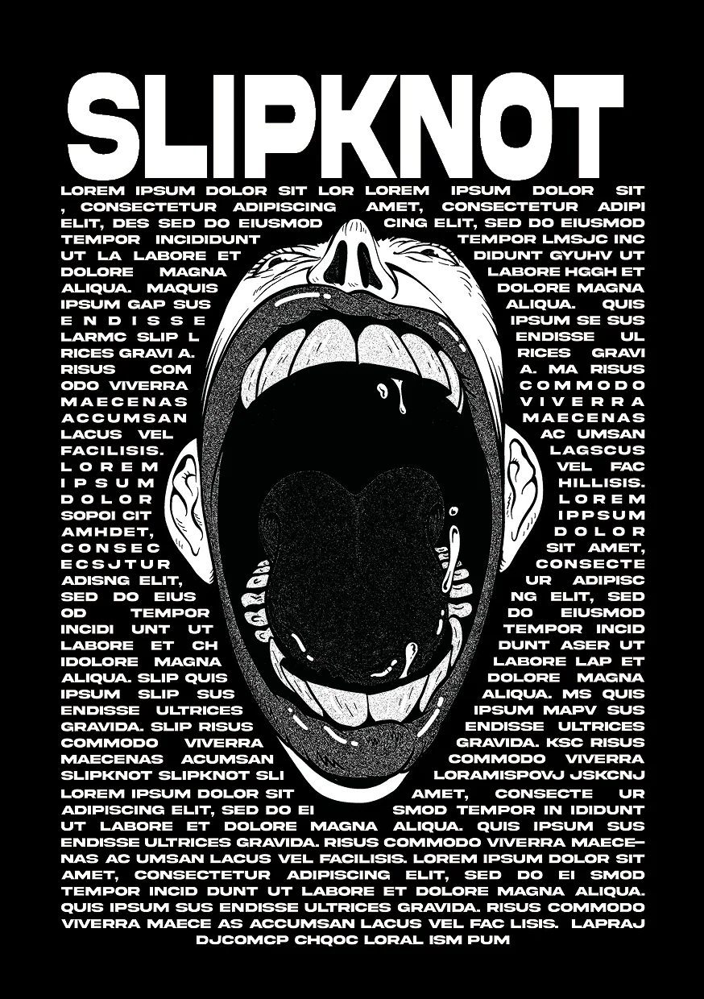
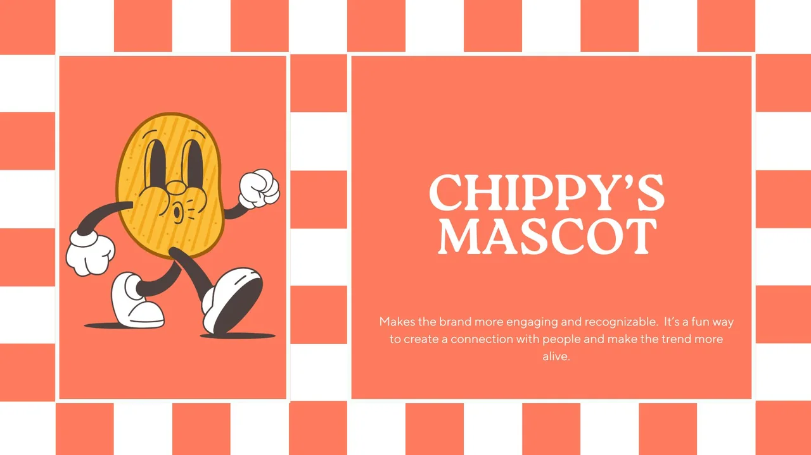

ARCHIVE 01 / PROJETS ÉTUDIANTS
Apprendre
en faisant.
Quatre briefs. Quatre terrains d’essai.
Édition, identité et expériences digitales.

Chercher, essayer,recommencer.

ÉDITION / IDENTITÉ / UX·UI01 / ÉDITION / EXERCICE ÉTUDIANT
Slipknot.
L’énergie du papier.
Un fanzine noir et blanc composé sur InDesign. Images du groupe retravaillées au seuil, superpositions et rythme éditorial.
02 / IDENTITÉ / PROJET FICTIF EN BINÔME
Chippy’s.
Sortir du cadre.
Un concept de food truck autour du chips bag : une mascotte et un univers de campagne. Les implantations et partenariats proposés appartiennent à l’exercice.
Ouvrir les autres planches ＋
03 / IDENTITÉ + UX/UI / PROJET ÉTUDIANT
Club Saucette.
Du signe au parcours.
Un bar à sauces fictif, une mascotte et un parcours de commande mobile conçu sur Figma.
L’IDENTITÉ → LE MENU → LA COMMANDE
04 / COMPOSITION / EXERCICE ÉTUDIANT
Les mêmes mots.
Trois intentions.
Un contenu identique, trois directions : Premium, Fun et Urgent.
FIN DU CLASSEUR